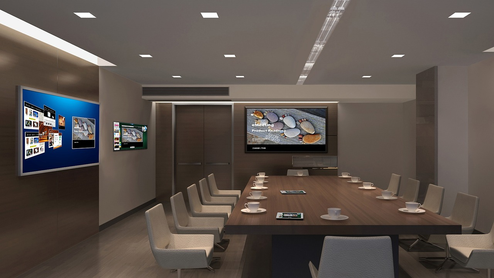

Scrum es una metodología ágil para la gestión de proyectos, aplicable a cualquier tipo de proyecto independiente del tema de negocio, del producto o desarrollo del servicio y su complejidad.
Esta metodología se caracteriza por promover buenas prácticas para trabajar en un ambiente de responsabilidad colectiva en el cual los miembros del equipo de trabajo hacen parte activa en la realización de los entregables, basados en la comunicación clara y transparente acerca de los procesos que se vayan realizando en cada uno de los sptints del proyecto. Esta comunicación se realiza por medio de reuniones muy cortas que se realizan diariamente para tratar temas muy concretos lo cual contribuye en la minimización de tiempos de resolución de inconvenientes y maximización de la productividad del equipo para así obtener prontos resultados satisfactorios.